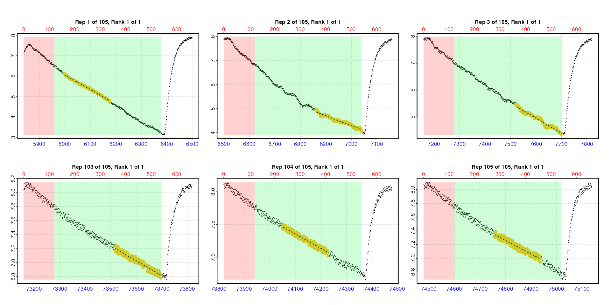
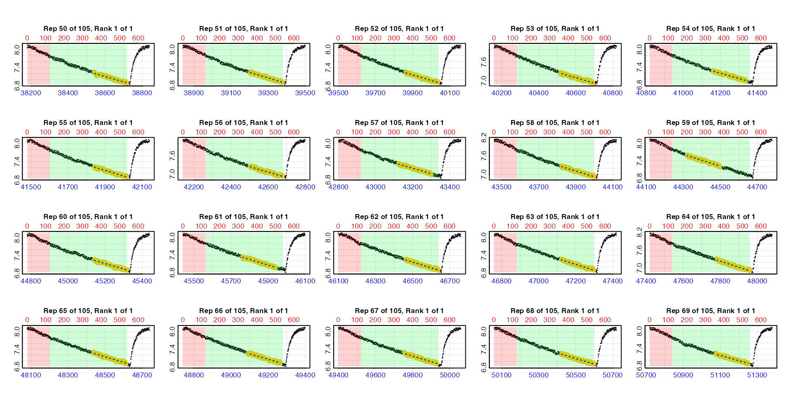
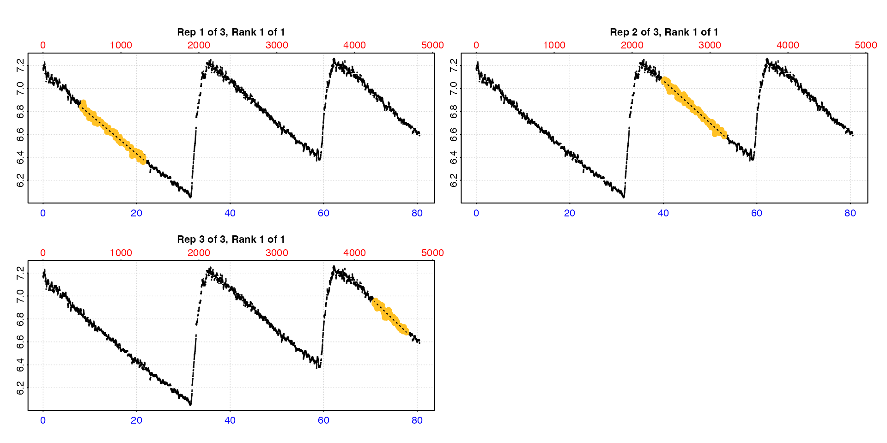
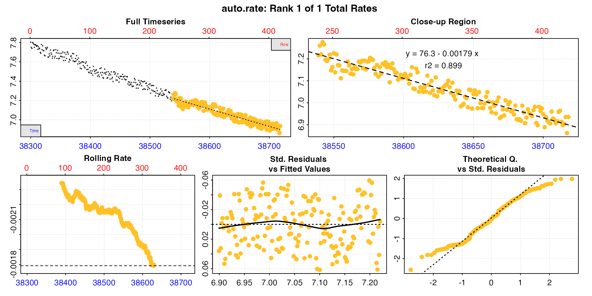

auto_rate.int: Automatic extraction of rates in intermittent-flow respirometry
Source:vignettes/auto_rate.int.Rmd
auto_rate.int.RmdIntroduction
auto_rate.int() is a function for automatically
extracting rates from each replicate in intermittent-flow respirometry
data using the auto_rate() function. You can use it to
extract from each replicate the most linear (i.e. most consistently
sustained) rates, the lowest or highest rates of a specific duration, or
any of the other methods supported by auto_rate.
This page contains descriptions and simple examples of the
functionality. You should familiarise yourself with how
auto_rate works before using auto_rate.int.
See auto_rate() and here
for a thorough overview. See vignette("intermittent_short")
for how auto_rate.int can be used to analyse a relatively
brief intermittent-flow respirometry experiment, and
vignette("intermittent_long") for an example of analysing a
longer experiment.
Overview
auto_rate.int uses the starts locations to
subset each replicate from the data in x. It assumes the
end location of each replicate is the row preceding the start of the
next, or for the final replicate the last row of the dataset. It runs
auto_rate on the specified measure phase of
each replicate, extracting rates using the method,
width, and by inputs which are passed to
auto_rate. A wait phase can be specified to
exclude data at the start of each replicate. The flushes can be excluded
by using an appropriate measure phase.
auto_rate returns multiple rate results depending on the
inputs. The n input determines how many of these are
returned to auto_rate.int for each replicate and saved in
the summary tables. The default is n = 1, so for example in
using the "linear" method this will be the most linear rate
in each replicate, or if using "lowest" it will be the
single lowest rate across the specified width. It is
possible to return multiple rates per replicate by changing
n, however consider carefully if this is necessary as the
output will necessarily contain many more rate results which may make it
difficult to explore and select results (although this is possible using
select_rate()).
An auto_rate object is saved for each replicate in the
output in $results, and the output $summary
table contains the results from all replicates in order with the
$rep column indicating the replicate number. If
n has been changed from the default to return more than one
result per replicate, the $rank column indicates ranking of
results within each replicate. This output object can be passed
to subsequent functions such as adjust_rate() and
convert_rate() for further processing.
Inputs
There are three required inputs:
x: The time~oxygen data from a single intermittent-flow experiment as either adata.frameorinspectobject-
starts: The location of the start of each replicate. This can be either:A single numeric value representing a regular row or time interval starting at row 1. This option should only be used when replicates cycle at regular intervals. If the first replicate does not start at row 1 of the data in
x, it should be subset so that it does. Seesubset_data()and examples below for how to do this.A numeric vector of row numbers or times indicating each replicate start location. Useful if replicates do not cycle at regular intervals.
width: This is the width used in theauto_rateanalysis in either rows or a time duration in the units of the raw data. It must be entered in the units of thebysetting ("row"or"time"), which also sets the units of thestarts,waitandmeasureinputs. Seeauto_rate()and here for how widths are applied. Note that proportionalwidthinputs accepted inauto_rateifby = "row"(e.g.0.2to represent 20% of the total data length) will apply to the length of themeasurephase.
Other inputs
wait: A row length or time duration to be applied at the start of each replicate to exclude these data from any rate calculations. Can be a single value to apply the same wait phase to each replicate, or a vector of the same length asstartsof different wait phases for each replicate. Default isNULLin which case no wait phase is applied.measure: This is the region within which theauto_rateanalysis is conducted for each replicate. It is a row length or time duration to be applied at the end of thewaitphase (if used, otherwise it applies from the start of the data), and should be the correct length to exclude the flush period. Can be a single value to apply the same measure phase to each replicate, or a vector of the same length asstartsof different measure phases for each replicate. Default isNULLin which case the entire replicate is used (which is rarely what is wanted).by: Controls how thestarts,wait,measure, andwidthinputs are applied. The default is"row"withby = "time"being the other option. We would strongly advise you use"row"whenever possible as, while the function has been tested, the code for parsing inputs by row is much more robust and less likely to throw up obscure bugs. (Please provide feedback for any issues you encounter using either method).method: Selects the rate extraction method used inauto_rate. The default method is"linear". Seeauto_rate().n: Sets how many rate results to extract from each replicate. Default is1.plot: Controls if a plot is produced. See Plot section.
Data
The urchin dataset used for examples below is the
included intermittent.rd example data with the time values
changed to minutes to better demonstrate time region selection.
Experimental data such as volume, weight, and row locations of
replicates, flushes etc. can be found in the data help file:
?intermittent.rd.
urchin <- intermittent.rd
urchin[[1]] <- urchin[[1]] / 60 # change time values to minutesThis is what the whole dataset look like. There are three replicates of different duration.
urchin <- inspect(urchin)Therefore in the following examples we specify three locations in
starts. See the later example for
how the starts of regularly spaced replicates are
specified.
Changing defaults
By default, if no inputs other than x,
starts, and width are entered, the
auto_rate default of method = "linear" is
applied to all the data in each replicate. This finds the most linear
region of a dataset (see vignette("auto_rate")).
auto_rate.int(urchin,
starts = c(1, 2101, 3901),
width = 400) |>
summary()
#> auto_rate.int: The `measure` input is NULL. Calculating rate to the end of the replicate.#>
#> # plot.auto_rate.int # ------------------
#> plot.auto_rate.int: Plotting all rates ...
#> -----------------------------------------
#>
#> # summary.auto_rate.int # ---------------
#> Summary of all rate results:
#>
#> rep rank intercept_b0 slope_b1 rsq density row endrow time endtime oxy endoxy rate
#> 1: 1 1 7.12 -0.0344 0.988 126 495 1291 8.23 21.5 6.84 6.40 -0.0344
#> 2: 2 1 8.53 -0.0366 0.991 191 2205 3188 36.73 53.1 7.17 6.60 -0.0366
#> 3: 3 1 9.72 -0.0390 0.984 391 3930 4673 65.48 77.9 7.18 6.69 -0.0390
#> -----------------------------------------Here it performs well in identifying linear regions. However, these inputs mean the flush data is included.
wait and measure
It is usually a good idea to use the measure input to
ensure flushes are excluded and that only relevant data is included in
the analysis. We also typically want to exclude some data at the start
of a replicate right after the flush, which we can do using
wait. All of these are applied in the default units of
by = "row". (We also pass legend = TRUE so
that the phases are labelled on the plots).
auto_rate.int(urchin,
starts = c(1, 2101, 3901),
wait = 300,
measure = c(1500, 1100, 600),
width = 400,
legend = TRUE) |>
summary()
#>
#> # plot.auto_rate.int # ------------------
#> plot.auto_rate.int: Plotting all rates ...
#> -----------------------------------------
#>
#> # summary.auto_rate.int # ---------------
#> Summary of all rate results:
#>
#> rep rank intercept_b0 slope_b1 rsq density row endrow time endtime oxy endoxy rate
#> 1: 1 1 7.12 -0.0344 0.988 227 495 1291 8.23 21.5 6.84 6.40 -0.0344
#> 2: 2 1 8.55 -0.0370 0.988 256 2402 3186 40.02 53.1 7.06 6.60 -0.0370
#> 3: 3 1 9.72 -0.0390 0.956 410 4251 4663 70.83 77.7 6.93 6.68 -0.0390
#> -----------------------------------------Note how the rates (yellow points) do not use the entire
measure phase. This is because the auto_rate
analysis occurs within the measure phase and the actual lengths
of the rate results depends on the method and
width. If you want to use the entire measure
phase see calc_rate.int().
n input
These results show the single top-ranked linear region in each
replicate and we can see the rates are fairly consistent. Note there is
one result per replicate, with the replicate number in the
rep column. The rank column shows ranking of
rates within a replicate for the particular method
used, and are all 1 here because only one rate has been
extracted. You can modify the n input to output more than
one rate per replicate. This is what the analysis looks like if it is
changed.
auto_rate.int(urchin,
starts = c(1, 2101, 3901),
wait = 300,
measure = c(1500, 1100, 600),
width = 400,
n = 3,
plot = TRUE,
legend = TRUE) |>
summary()#>
#> # plot.auto_rate.int # ------------------
#> plot.auto_rate.int: Plotting all rates ...
#> -----------------------------------------
#>
#> # summary.auto_rate.int # ---------------
#> Summary of all rate results:
#>
#> rep rank intercept_b0 slope_b1 rsq density row endrow time endtime oxy endoxy rate
#> 1: 1 1 7.12 -0.0344 0.988 227 495 1291 8.23 21.5 6.84 6.40 -0.0344
#> 2: 1 2 7.12 -0.0343 0.990 214 499 1412 8.30 23.5 6.84 6.31 -0.0343
#> 3: 1 3 7.12 -0.0345 0.986 213 683 1412 11.37 23.5 6.71 6.31 -0.0345
#> 4: 2 1 8.55 -0.0370 0.988 256 2402 3186 40.02 53.1 7.06 6.60 -0.0370
#> 5: 2 2 8.30 -0.0322 0.958 254 2985 3476 49.73 57.9 6.70 6.43 -0.0322
#> 6: 2 3 8.54 -0.0368 0.985 211 2482 3188 41.35 53.1 7.02 6.60 -0.0368
#> 7: 3 1 9.72 -0.0390 0.956 410 4251 4663 70.83 77.7 6.93 6.68 -0.0390
#> 8: 3 2 9.43 -0.0353 0.955 230 4357 4781 72.60 79.7 6.90 6.63 -0.0353
#> 9: 3 3 9.46 -0.0356 0.942 113 4362 4719 72.68 78.6 6.88 6.66 -0.0356
#> -----------------------------------------Note the rep and rank columns which keep
track of rates.
These results can be passed to adjust_rate and
convert_rate for further processing, however consider
carefully if you really need to extract more than one rate from each
replicate, or if you do be prepared to do a little extra processing of
the results (see select_rate()).
Lowest and highest rates
Often in intermittent-flow respirometry we want to get the lowest or
highest rates from each replicate, to identify, for example, standard or
active metabolic rates. We can do that using the method,
width, and by inputs which are passed to
auto_rate.
In these examples we use by = "time" selection of
regions. This is the lowest rate over a period of 8 minutes
from each replicate:
auto_rate.int(urchin,
starts = c(0, 35, 65),
wait = 5,
measure = c(25, 15, 15),
method = "lowest",
width = 8,
by = "time") |>
summary()#>
#> # plot.auto_rate.int # ------------------
#> plot.auto_rate.int: Plotting all rates ...
#> -----------------------------------------
#>
#> # summary.auto_rate.int # ---------------
#> Summary of all rate results:
#>
#> rep rank intercept_b0 slope_b1 rsq density row endrow time endtime oxy endoxy rate
#> 1: 1 1 7.03 -0.0306 0.966 NA 1321 1801 22.0 30.0 6.37 6.11 -0.0306
#> 2: 2 1 8.48 -0.0356 0.969 NA 2764 3244 46.0 54.0 6.86 6.54 -0.0356
#> 3: 3 1 9.44 -0.0353 0.965 NA 4351 4831 72.5 80.5 6.92 6.59 -0.0353
#> -----------------------------------------This is the highest rate over a period of 8 minutes from
each replicate:
auto_rate.int(urchin,
starts = c(0, 35, 65),
wait = 5,
measure = c(25, 15, 15),
method = "highest",
width = 8,
by = "time") |>
summary()#>
#> # plot.auto_rate.int # ------------------
#> plot.auto_rate.int: Plotting all rates ...
#> -----------------------------------------
#>
#> # summary.auto_rate.int # ---------------
#> Summary of all rate results:
#>
#> rep rank intercept_b0 slope_b1 rsq density row endrow time endtime oxy endoxy rate
#> 1: 1 1 7.15 -0.0372 0.964 NA 301 781 5 13 6.98 6.67 -0.0372
#> 2: 2 1 8.65 -0.0391 0.974 NA 2644 3124 44 52 6.92 6.62 -0.0391
#> 3: 3 1 9.70 -0.0388 0.969 NA 4202 4682 70 78 6.99 6.69 -0.0388
#> -----------------------------------------See help("auto_rate") and
vignette("auto_rate") for other methods that can be
applied.
Regularly spaced replicates
For intermittent-flow experiments where the replicates are regularly
spaced you do not have to specify the start location of every single one
in starts, but can instead enter a single value indicating
the interval in rows or a time duration between each one starting at the
first row of the input data.
Specify regular replicate structure
The zeb_intermittent.rd example dataset uses a regular
replicate structure of 9 minutes measure and 2 minutes flush (660 rows
total) for most of its length. See
help("zeb_intermittent.rd") for exact locations, but
essentially after a background control and a single replicate of 14
minutes this structure is maintained until the ending background
recording. Therefore to use this option we need to use
subset_data() (or other methods in R to subset
data) to extract only the regular replicates, and pipe the result to
auto_rate.int. We use starts to specify that
replicates cycle at 660 rows, impose a wait phase of 2
minutes, a measure phase of 7 minutes to exclude the flush,
and use the other inputs to extract the lowest rate of 3 minutes
duration.
zeb_all <- zeb_intermittent.rd |>
# Inspect the data
inspect() |>
# Subset regular replicates from larger dataset
subset_data(from = 5840,
to = 75139,
by = "row",
quiet = TRUE) |>
# Use auto_rate.int to get lowest 3 minute rate from each replicate,
# plotting first 3 and last 3 (using 'pos')
auto_rate.int(starts = 660,
wait = 120,
measure = 420,
width = 180,
method = "lowest",
plot = TRUE,
pos = c(1:3, 103:105)) 
Here we use the pos input which is passed to
plot to select the first and last three replicates for
plotting to check everything looks okay. This is only for illustration
here. In an actual experiment we strongly recommend
every replicate rate result be examined visually. Up to 20 results at a
time can be plotted using the pos input. See Plot section below for further details.
View summary
Each replicate result is saved in the $summary element
of the output, or we can use summary().
summary(zeb_all)
#>
#> # summary.auto_rate.int # ---------------
#> Summary of all rate results:
#>
#> rep rank intercept_b0 slope_b1 rsq density row endrow time endtime oxy endoxy rate
#> 1: 1 1 48.5 -0.00707 0.992 NA 157 336 5996 6175 6.10 4.81 -0.00707
#> 2: 2 1 33.1 -0.00411 0.957 NA 1021 1200 6860 7039 5.00 4.10 -0.00411
#> 3: 3 1 47.4 -0.00559 0.966 NA 1681 1860 7520 7699 5.44 4.35 -0.00559
#> 4: 4 1 38.1 -0.00392 0.977 NA 2202 2381 8041 8220 6.59 5.89 -0.00392
#> 5: 5 1 36.0 -0.00336 0.958 NA 2967 3146 8806 8985 6.40 5.74 -0.00336
#> ---
#> 101: 101 1 157.0 -0.00207 0.927 NA 66271 66450 72110 72289 7.36 7.02 -0.00207
#> 102: 102 1 163.1 -0.00214 0.921 NA 67021 67200 72860 73039 7.20 6.85 -0.00214
#> 103: 103 1 162.9 -0.00212 0.933 NA 67677 67856 73516 73695 7.22 6.82 -0.00212
#> 104: 104 1 170.0 -0.00220 0.941 NA 68209 68388 74048 74227 7.48 7.10 -0.00220
#> 105: 105 1 155.5 -0.00198 0.920 NA 68917 69096 74756 74935 7.39 6.99 -0.00198
#> -----------------------------------------This object is now ready to be passed to adjust_rate()
and convert_rate(). Final rate selection can be handled
using select_rate() after conversion. See
vignette("select_rate") and
vignette("intermittent_long") for examples.
Plot
If plot = TRUE, a plot is produced of each replicate
rate result on a grid up to a total of 20. By default this is the first
20 (i.e. pos = 1:20). Others can be selected by modifying
the pos input, either in the main function call or when
calling plot() on output objects.
plot(zeb_all, pos = 50:69)
There are three ways in which these auto_rate.int
results can be plotted, selected using the type input in
either the main function call or when calling plot() on
output objects. For all plots, the bottom blue time axis shows the time
values of the original larger dataset, whilst the upper red row axis
shows the rows of the replicate subset.
type = "rep"
The default is type = "rep" in which each replicate is
plotted individually with the rate region highlighted. The rate data is
the yellow points, the red shaded region is the wait phase,
and the green shaded region the measure phase.
urch <- auto_rate.int(urchin,
starts = c(1, 2101, 3901),
wait = 300,
measure = c(1500, 1100, 600),
width = 400,
plot = TRUE,
type = "rep",
legend = TRUE)
type = "full"
Entering type = "full" will show each replicate rate
highlighted in the context of the entire dataset.
auto_rate.int(urchin,
starts = c(1, 2101, 3901),
wait = 300,
measure = c(1500, 1100, 600),
width = 400,
plot = TRUE,
type = "full")
Note this may be of limited use when the dataset is large.
plot(zeb_all, type = "full", pos = 50)
type = "ar"
Lastly, the auto_rate result (as found in the
$results element of the output) for each individual row of
the summary table can be plotted using type = "ar" and the
pos input. Note these plots show only the
measure phase of the data and the rate result from within
it.
plot(zeb_all, type = "ar", pos = 50)
The pos input here can also be of multiple replicates
but this will produce multiple individual plots.
Additional plotting options
legend can be used to show labels (default is
FALSE). quiet suppresses console output.
Additional plotting parameters can also be passed to adjust margins,
axis label rotation, etc. See here.
S3 generic methods
As well as plot, saved auto_rate.int
objects work with the generic S3 methods print,
summary, and mean
print
This simply prints a single summary row rate result to the console,
by default the first one. The pos input can be used to
print others.
print(zeb_all)
#>
#> # print.auto_rate.int # -----------------
#>
#> Replicate 1 of 105, Rank 1 of 1:
#> Rate: -0.00707
#>
#> To see other results use 'pos' input.
#> To see full results use summary().
#> -----------------------------------------
print(zeb_all, pos = 50)
#>
#> # print.auto_rate.int # -----------------
#>
#> Replicate 50 of 105, Rank 1 of 1:
#> Rate: -0.00179
#>
#> To see other results use 'pos' input.
#> To see full results use summary().
#> -----------------------------------------
summary
This prints the summary table to the console which contains linear
model coefficients and other metadata for each replicate rate. The
pos input can be used to select which replicates
($rep column) to include.
summary(zeb_all)
#>
#> # summary.auto_rate.int # ---------------
#> Summary of all rate results:
#>
#> rep rank intercept_b0 slope_b1 rsq density row endrow time endtime oxy endoxy rate
#> 1: 1 1 48.5 -0.00707 0.992 NA 157 336 5996 6175 6.10 4.81 -0.00707
#> 2: 2 1 33.1 -0.00411 0.957 NA 1021 1200 6860 7039 5.00 4.10 -0.00411
#> 3: 3 1 47.4 -0.00559 0.966 NA 1681 1860 7520 7699 5.44 4.35 -0.00559
#> 4: 4 1 38.1 -0.00392 0.977 NA 2202 2381 8041 8220 6.59 5.89 -0.00392
#> 5: 5 1 36.0 -0.00336 0.958 NA 2967 3146 8806 8985 6.40 5.74 -0.00336
#> ---
#> 101: 101 1 157.0 -0.00207 0.927 NA 66271 66450 72110 72289 7.36 7.02 -0.00207
#> 102: 102 1 163.1 -0.00214 0.921 NA 67021 67200 72860 73039 7.20 6.85 -0.00214
#> 103: 103 1 162.9 -0.00212 0.933 NA 67677 67856 73516 73695 7.22 6.82 -0.00212
#> 104: 104 1 170.0 -0.00220 0.941 NA 68209 68388 74048 74227 7.48 7.10 -0.00220
#> 105: 105 1 155.5 -0.00198 0.920 NA 68917 69096 74756 74935 7.39 6.99 -0.00198
#> -----------------------------------------
summary(zeb_all, pos = 1:4)
#>
#> # summary.auto_rate.int # ---------------
#> Summary of results from entered 'pos' row(s):
#>
#> rep rank intercept_b0 slope_b1 rsq density row endrow time endtime oxy endoxy rate
#> 1: 1 1 48.5 -0.00707 0.992 NA 157 336 5996 6175 6.10 4.81 -0.00707
#> 2: 2 1 33.1 -0.00411 0.957 NA 1021 1200 6860 7039 5.00 4.10 -0.00411
#> 3: 3 1 47.4 -0.00559 0.966 NA 1681 1860 7520 7699 5.44 4.35 -0.00559
#> 4: 4 1 38.1 -0.00392 0.977 NA 2202 2381 8041 8220 6.59 5.89 -0.00392
#> -----------------------------------------export = TRUE can be used to export the summary table as
a data frame, or those rows selected using pos
zeb_exp <- summary(zeb_all,
pos = 1:4,
export = TRUE)
zeb_exp
#> rep rank intercept_b0 slope_b1 rsq density row endrow time endtime oxy endoxy rate
#> <num> <int> <num> <num> <num> <lgcl> <num> <num> <num> <num> <num> <num> <num>
#> 1: 1 1 48.5 -0.00707 0.992 NA 157 336 5996 6175 6.10 4.81 -0.00707
#> 2: 2 1 33.1 -0.00411 0.957 NA 1021 1200 6860 7039 5.00 4.10 -0.00411
#> 3: 3 1 47.4 -0.00559 0.966 NA 1681 1860 7520 7699 5.44 4.35 -0.00559
#> 4: 4 1 38.1 -0.00392 0.977 NA 2202 2381 8041 8220 6.59 5.89 -0.00392
mean
This averages all replicate rates in the $rate column,
or those selected using pos. The result can be saved as a
value by using export = TRUE.
zeb_mean <- mean(zeb_all, pos = 1:4, export = TRUE)
#>
#> # mean.auto_rate.int # ------------------
#> Mean of rate results from entered 'pos' rows:
#>
#> Mean of 4 rates:
#> [1] -0.00517
#> -----------------------------------------
zeb_mean
#> [1] -0.00517This could be passed as a numeric value to later functions such as
convert_rate(), although it is usually better to do this
kind of result filtering after conversion.